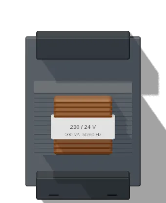
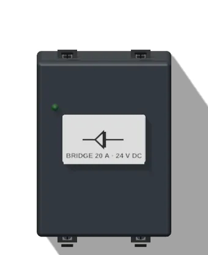
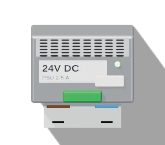

أساسيات الكهربا · الدرس 10 من 13
لوحات الكنترول والشواحن مش بتشتغل على 220V مباشرة. الترانس بيوطّي الجهد (مثلًا لـ 24V أو 12V)، والباور سبلاي بيحوّل الـ AC لـ DC ثابت. هتفهم الاتنين، وتقيسهم، وتعرف أعطالهم.

1100 لفّة ⇐ 120 لفّة: 220 × 120 ÷ 1100 = 24V
الترانس AC بس. على DC الابتدائي يتحرق.
ترانس 100VA: فيوز ناحية الـ 24V حوالي 4A. والثانوي معزول عن الشبكة ⇐ أأمن.


باور اللوحات سويتشنج: صغير وخفيف وبيشتغل من 100 لـ 240V.
بيتقاس شغّال: الدخول V~ بين L و N، والخرج V⎓ بين +V و −V.
ترانسات الكنترول على حسب IEC 61558، وباور سبلاي الـ 24V DC في اللوحات بيكون عادة SELV/PELV. القيم بتتحسب من دايرة حقيقية جوه الصفحة. تقدّمك بيتسجّل على الجهاز ده بس.
© 2026 LearnElectricals. كل الحقوق محفوظة. الموقع مش تابع لأي شركة من الشركات المذكورة (زي Siemens و Allen-Bradley و Delta و Schneider وغيرهم)، والأسماء والعلامات التجارية ملك أصحابها، ومستخدمة بس عشان نشرح الأجهزة.